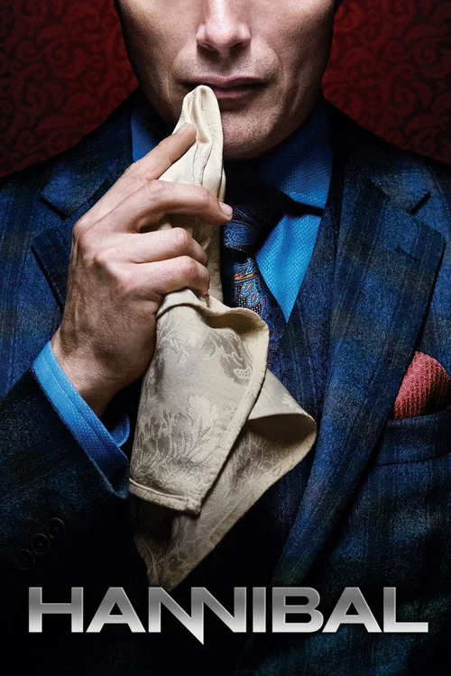
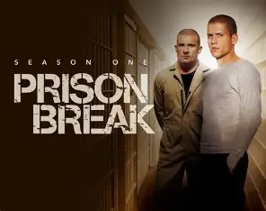

Choose Your Interest
The list of movies
1.Peaky Blinders
Peaky Blinders is a critically acclaimed British period crime drama
created by Steven Knight. Set in Birmingham, England, following the
aftermath of World War I, the show centers on the Shelby crime
family and their ambitious, ruthless leader, Tommy Shelby
(played by Cillian Murphy).
 The series is known for its stylized cinematography, gritty
atmosphere, and a contemporary rock-and-roll soundtrack that
juxtaposes the 1920s setting. Over six seasons, it tracks the
family's rise from local street bookmakers to influential figures
in international politics and business.
The series is known for its stylized cinematography, gritty
atmosphere, and a contemporary rock-and-roll soundtrack that
juxtaposes the 1920s setting. Over six seasons, it tracks the
family's rise from local street bookmakers to influential figures
in international politics and business.
2.Hannibal
Hannibal Lecter: The Brilliant and Terrifying Psychiatrist
Dr. Hannibal Lecter is one of the most iconic villains in modern
fiction and cinema. Created by author Thomas Harris, he is a
brilliant forensic psychiatrist, a cultured man of exceptionally
high intellect, a connoisseur of fine art and gastronomy—and
a notorious, unrepentant serial killer and cannibal.

Hannibal Lecter: The Brilliant and Terrifying Psychiatrist
Dr. Hannibal Lecter is one of the most iconic villains in
modern fiction and cinema. Created by author Thomas Harris,
he is a brilliant forensic psychiatrist, a cultured man of
exceptionally high intellect, a connoisseur of fine art
and gastronomy—and a notorious, unrepentant serial killer
and cannibal.
3.Prison Break
Prison Break is a massive-hit American serial drama
television series created by Paul Scheuring that aired on
Fox from 2005 to 2017 (spanning 5 seasons). Known for its
high-octane suspense, intricate plotting, and dramatic
twists, it became a staple of 2000s television.

At its core, Prison Break is an action-packed thriller
about a genius engineer who intentionally gets sent to
maximum-security prison to break out his brother, who was
framed for murder and sentenced to death.
Using blueprints covertly tattooed onto his body and help
from a dangerous mix of fellow inmates, he has to pull off
an impossible escape while dodging corrupt officials and a
massive government conspiracy.
The Day of the Jackal
The Day of the Jackal is a legendary political thriller
franchise centered on a cold, meticulous, and professional
assassin known only as "The Jackal".Originally a
bestselling 1971 novel by Frederick Forsyth, the story has
since become a classic blueprint for modern spy fiction
and manhunt dramas, inspiring a famous 1973 film
adaptation and a contemporary television series.
In short, The Day of the Jackal (the modern TV series) is
a high-stakes cat-and-mouse thriller about an elite,
elusive lone-wolf assassin (Eddie Redmayne) who carries
out high-fee global hits, and the relentless British
intelligence officer (Lashana Lynch) who makes it her
personal mission to track him down across Europe.